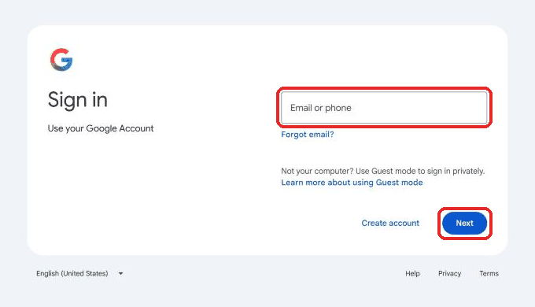
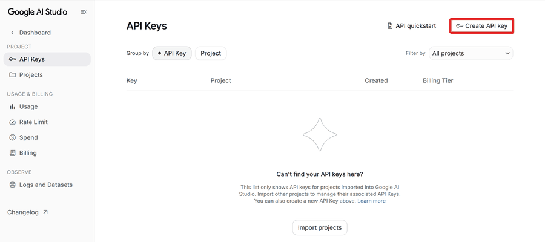
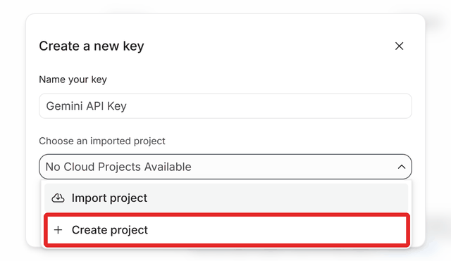
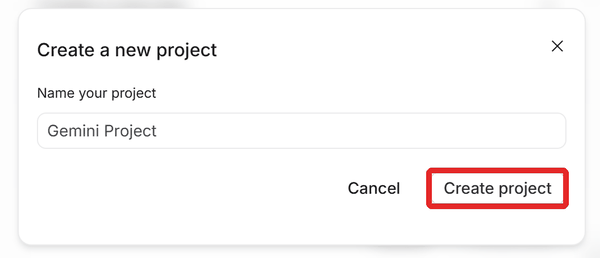
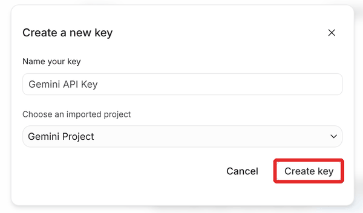
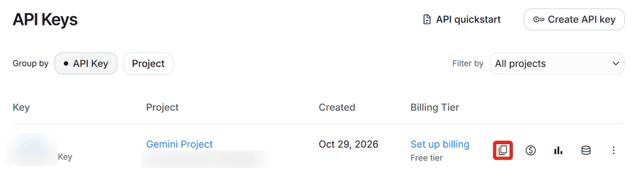

Help
Short answers. Click a question to open it.
What are the two limits?
Anthropic gives each account two limits. The 5-hour window starts with your first message and resets 5 hours later. The Weekly limit covers the whole week and resets once a week.
The figures are Anthropic's official ones.
How do I read the bars?
Each bar is the share of a limit used; the text under it says how much is % left and when it resets. Green is fine, amber is getting close, red is nearly or fully used.
On the widget's bars a light tick shows how much of the window's time has passed. A bar past its tick means you are using it faster than the window allows: at this pace it runs out before it resets.
Not started yet means no use in that window yet, so there is no reset time.
What is "Fable 0%" under the bars?
Some models have their own weekly limit on top of the two above. Each one shows as a small chip with the model's name, for example Fable 12%; its reset time is in the tooltip.
Claude CLI and Claude Desktop: what's the difference?
Claude CLI is Claude Code in a terminal and in VS Code; they share one sign-in. Claude Desktop is the desktop app and keeps its own sign-in.
The two are separate: switching one never changes the other.
How do I switch accounts? What is auto-switch?
Click Use here on an account. Claude CLI switches at once. Claude Desktop closes and opens again on that account, so tasks running in it stop.
Auto-switch moves Claude CLI to another account when the one in use reaches 95% of its 5-hour limit or 99% of its weekly limit (both set in Settings). The weekly one is higher because 1% of a week is about five times as much use as 1% of five hours. It never touches Claude Desktop. Accounts switched off are skipped.
How do I add an account?
Claude CLI: click + Add account and sign in on the page that opens in your browser. The account shows up here by itself within about 10 s.
Claude Desktop: click its + Add account. Claude Desktop opens again signed out; whichever account you sign in with is saved, and later switches need no sign-in.
How often are the figures checked? What does 429 mean?
Every account every 2 minutes by default (change it in Settings). Near a limit more often: from 70% used twice as often, from 85% four times, from 95% eight times, at most every 15 s. An account at a 100% limit is not checked again until that limit resets.
HTTP 429 means Anthropic asked us to slow down. The app waits before asking again: 5 minutes, then twice as long each time, up to 1 hour.
How do I use the widget?
Hover the tray icon to see the widget. To keep it on screen, right-click the icon and choose Pin widget; drag it anywhere.
The CLI and Desktop buttons next to an account switch that side to it. A click elsewhere on the hover widget opens the dashboard.
How do updates work?
The app checks GitHub releases for a new version every 3 days by itself, or when you click Check for updates in Settings or the tray menu.
If Install updates automatically is ticked, a new version is installed by itself; otherwise click Update to … at the top. The app closes and starts again on the new version.
Claude Code on Gemini (cgemini)
The cgemini command runs Claude Code as usual, but its answers come from Google's Gemini models, paid for by a free Google AI Studio key. Your claude command and Claude logins stay as they are.
To set it up: click + Add Gemini account (free). Google AI Studio opens in your browser and the dashboard shows four steps, with pictures (below): 1. sign in with your Google account there (and accept Google's terms if asked); 2. the first time, there is no code yet: press Create API key; if it says "No Cloud Projects Available", choose Create project, press Create project again (keep the name), then Create key; 3. next to your access code (Google calls it an "API key"), press the Copy button, two small squares; 4. that's it: the dashboard picks it up by itself, checks it with Google and saves it. Then press Use this on the card: a window opens with Claude Code, and Gemini answers instead of Claude. (Or type cgemini in a new terminal: one opened before you added the key does not know it yet.) The dashboard must be running while you use it. Free has a daily limit (try again the next day) and can be slower than Claude.
Privacy: With a free key, Google may read what you send through cgemini, your code too, and use it to improve its models. Do not use it for code that must stay private.






The app reads the clipboard only while that window is open (10 minutes at most), and only keeps text that looks exactly like a Google key; anything else you copy is ignored, never saved or sent. If it does not pick it up, open Or paste it here in the window, paste the code and click Done.
Google sets the free tier's limits (requests per minute and per day) and can change them; AI Studio shows yours. When one is reached, Claude Code reports a rate limit: wait and try again. The card lets you pick another Gemini model (under Advanced). Only Flash models are free; the others say "may cost money".
The key stays on this computer, in the app's state file (%USERPROFILE%\.claude-usage-dashboard\state.json), and is only ever sent to Google. The dashboard shows only its last 4 characters.
To remove it: click Remove on the card. The key is deleted from this computer and cgemini stops working. To revoke the key itself, delete it in Google AI Studio.
Where is my data kept?
Everything stays on this computer, in %USERPROFILE%\.claude-usage-dashboard. Sign-in tokens are only ever sent to Anthropic.
How do I uninstall it?
Windows Settings → Apps, find Claude Usage, click Uninstall. Your saved accounts are kept.